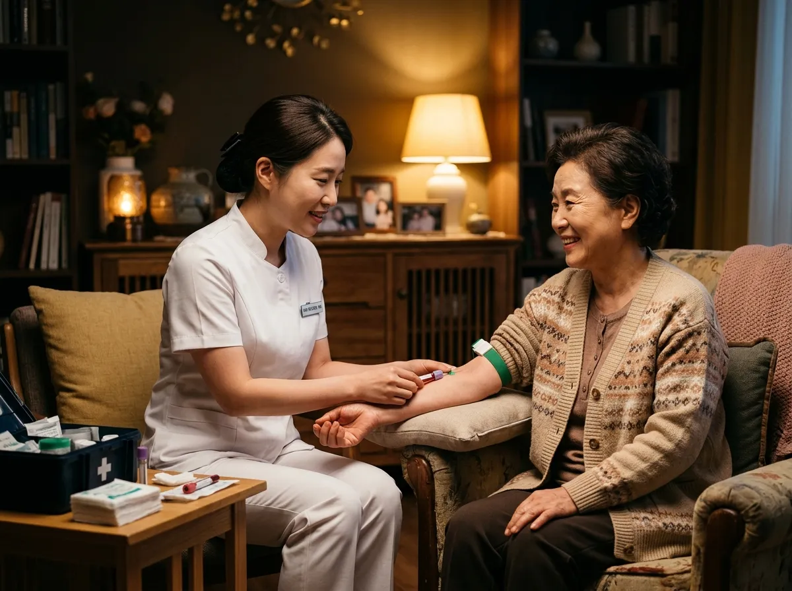

01 · TY LIFE × GC케어TY 올라이프케어
월 3만원대로 1:1 건강관리 서비스와 All-Life 암 리스크 검사, 생활 라이프 서비스를 한 번에. 만기에는 납입금을 100% 돌려받습니다.
- 13개 분야 전문의·간호사 1:1 건강상담 (본인 + 직계가족 4인)
- 유전자 + 종양표지자 통합 암검사, 간호사 방문 채혈
- 중대질환 진단 시 간병인·가사도우미·차량 에스코트
월 35,000원× 150회 · 만기 100% 환급
자세히 보기 →